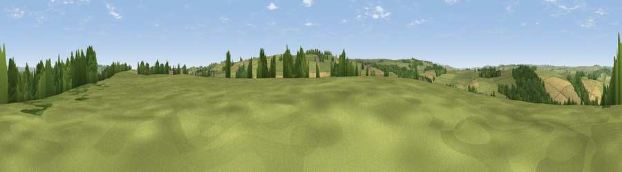

Viewpoint near Warden
#22339 in England · top 57% of its area beats it · near WardenWhere it is
The exact computed spot (NY 89525 64175). Click the marker for map links.
The view, rendered

A 360° render of this exact spot computed from the terrain model, tree cover and land cover — summer colours, afternoon light, calibrated against photographs of famous viewpoints. Real trees, hedges and buildings will differ in detail.
The panorama
Grey silhouette: terrain skyline in each direction (720 bearings, Earth curvature and refraction included). Dashed green: skyline with trees (+15 m) and buildings (+8 m) as obstacles. Blue strip: how far the ground is visible on each bearing.
Where the view opens
Wedge length = distance to the farthest visible ground on that bearing (vegetation-aware). Rings at 10, 25 and 50 km.
What fills the view
59% grassland · 23% woodland · 18% cropland
Angular shares of the visible panorama (visual magnitude), not map area. Landscape diversity 0.43 (0–1 Shannon).
Key numbers
More beautiful places nearby
The staircase of upgrades: each row has a higher view potential than everything closer. Driving times are estimates from straight-line distance, calibrated against real road routing — check an actual route before setting out.
| Place | Direction | Drive | Score |
|---|---|---|---|
| Viewpoint near Hexham | SE · 3 km | ~7 min | 62.4 |
| Viewpoint near Fourstones | NNE · 4 km | ~9 min | 71.4 |
| Viewpoint near West Woodburn | N · 20 km | ~34 min | 73.4 |
| Viewpoint near Allenheads | SSW · 21 km | ~35 min | 74.6 |
| Pontop Pike | ESE · 28 km | ~44 min | 77.8 |
| Viewpoint near Bewcastle | WNW · 34 km | ~52 min | 78.9 |
| Viewpoint c11644_7156 | WNW · 36 km | ~55 min | 80.8 |
| Viewpoint near Thropton | NNE · 37 km | ~55 min | 81.8 |
54.97208, -2.16517 · source: screening · position refined by local search. Computed location — check access rights before visiting.